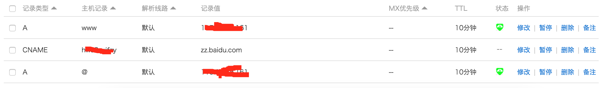

使用Hexo搭建博客
从CSDN开始，一直想有自己的独立博客。15年初买了域名www.yanglonglong.com，14年中旬买了阿里云服务器，准备自己从头开始搭建自己的博客。然后把技术方案想好了，数据库使用mongo，后台语言使用node和express，前端使用angular，jade，scss。
在15年末，小婧用Jeklly搭建了自己的博客，感觉也很不错，但是自己还是抱着自己从头开始搭建的想法，准备磨刀霍霍大干一场。在16年寒假用Axure设计了自己的博客，想了好多功能。然后项目太多，博客就一拖在拖。域名都续费了，博客还没建起来。小婧推荐用Hexo试试，先把博客打起来，跟大家一起分享知识。觉得很有道理，就不重复造轮子了，等以后有时间了再好好折腾。
在16年4月中旬建立了本博客，希望能产出高质量博文！
安装
- 安装 Node
- 安装 Git
- 注册 Github, 新建项目，同时设置SSH
安装 Hexo
12345$ sudo npm i hexo hexo-cli -g$ hexo init yllblog # 在这里填写博客根目录$ hexo new "hello world" # 创建新博文$ hexo generate # 生成静态文件public$ hexo server # 打开静态文件服务器，浏览器中输入http://localhost:4000部署到Github
12$ npm i hexo-deployer-git -S # 部署到Github的依赖库，说明：-D会出ERROR Deployer not found: git错误修改配置文件_config.yml：
1234deploy:type: gitrepository: https://github.com/yllziv/yllziv.github.io.gitbranch: master1$ hexo deploy # 将public中的文件上传到github中这个时候访问yllziv.github.io即可看到自己博客。
修改主题为Next
说明：站点配置文件为博客根目录下的 yllblog/_config.yml。
主题配置文件为主题目录下的 yllblog/themes/next/_config.yml。
|
|
具体的配置参考 NexT 使用文档
- 选择 Scheme
- 设置 菜单
- 设置 侧栏
- 设置 头像
- 集成第三方服务: 多说评论／百度统计／全文检索
- 添加「标签」/ 「分类」页面
- 设置代码高亮主题
- 侧边栏社交链接
- 开启打赏功能
- 设置友情链接
- 多说评论显示 UA
- 腾讯公益404页面
等等，写的很详细，大家去那里看具体操作就可以，在此就不赘述。
说明：每次修改主题配置文件不需要重启服务就可以看到变化。但是修改站点配置文件就需要重启服务，建议使用下面的命令：
|
|
修改默认图标：fontawesome
使用gulp压缩代码
直接使用hexo生成的代码都是未经过压缩的，响应时间增加，不利于HTTP优化。试过几个hexo的插件，例如hexo-clean-css／hexo-html-minifier／hexo-uglify，效果都不太理想。于是就使用自己熟悉的gulp，用几个gulp插件，写一下配置文件，然后再hexo s之前运行一下gulp命令进行压缩打包即可。不打包的时候我的public文件夹的大小是13.5 MB,打包后是8.3 MB。
|
|
gulpfile.js文件的内容为：
|
|
配置好之后，运行以下命令，可以生成压缩后的public文件：
|
|
使用nginx发布站点
nginx安装见另一篇博文：nginx在centos6.5和mac中的安装过程
这里添加nginx对传输的文件进行压缩的配置：
|
|
然后添加自己网站的目录到配置文件中，端口设置为默认的80。
每次将代码上传到github中后，登陆服务器：
|
|
绑定自定义域名
在博文根目录的source文件夹里创建CNAME文件，不带任何后缀，里面添加域名信息，如：yanglonglong.com
|
|
同时在域名提供商那里修改域名解析。
如果你的没有自己的服务器，使用github的pages，则将域名指向你博客的github域名，并指向你博客的github域名的ip地址。
|
|
若果你有自己的服务器，则将域名指向你服务器的ip地址，如下图所示。

过一段时间则会生效，访问www.yanglonglong.com，则DNS会解析到服务器上的静态网站。
说明：由于Github速度在国内比较慢，如果你需要网站访问很快的话，建议租台国内的服务器，或者将代码部署到国内的git托管站点，例如coding，我之前试过，特别稀烂。
自定义置顶功能
修改node_modules/hexo-generator-index/lib/generator.js为以下代码：
|
|
然后每次新建文章的时候，在头部添加top属性，根据top属性的值来排序，若top值一样，则根据date日期排序。如：
- top: 0 普通博文
- top: 1 重要博文
- top: 2 置顶博文
使用七牛存储博客照片
如果博客中图片很多，而且都放在github中保存的话，会存在两个问题。
- Github在国外，图片刷出来的速度很慢。
- Github个人站点的容量有限制，最大300M。
- 网站的资源都放在一个域名下，HTTP并行下载的资源数量一般为10个左右，建议放在多个域名中。
解决方法：将代码保存在Github中，将照片放到七牛中。
七牛每个用户提供5G的免费空间，每次上传照片对照片提前进行剪裁和压缩，每张照片大概300K，5G可以保存两万张左右，足够了。
建立博客相册
在博客根目录下新建photos文件，以后将要上传的照片都放到该目录下，然后运行下面脚本，自动将照片上传到七牛中。
生成相册的文件名在../source/photos/photos.json中，最后通过html+css+js＋ajax实现相册功能，用到了两个jquery插件：
fancybox和lazyload。
最终效果：相册－杨龙龙的个人博客
安装七牛node库：
|
|
编写自动上传脚本photo.js
|
|
上传相册照片
|
|
添加自定义页面
- 自定义js必须放倒themes－next－source中，否则会报错。
- 放到根目录-source中的css后缀必须是styl，否则会报错。
- 自定义页面，建议方法themes－next－source中，每个页面一个文件夹，包括html/css/js文件。
- 要在博客的右侧显示自定义的页面，可以使用iframe。例如：博客根目录－source-cv-index.md：
|
|
然后在themes－next－source－sitesource新建cv目录，将该页面的文件都放入该目录中。
将豆瓣数据放入博客
使用豆瓣收藏秀将自己的豆瓣收藏显示在博客中。
最终效果见：生活-杨龙龙的个人博客
博客根目录－source-life-index.md：
|
|
添加自己的格志
一年有12个月，80年有960个月，如果人生只有960个月，那么一个你已经度过多少个月，还剩多少个月，当你回首往事，你又会想起什么。格志把每个月当作一个格子，纪录这个月发生的值得回忆的事情，希望能珍惜当前的生活。
最终效果见：格志-杨龙龙的个人博客
建立自己的工具箱
经常使用一些前端工具，但是大部分工具页面都充斥着大量的广告，很早就有了自己实现几个常用的工具的想法。借助Github，实现了以下八个工具，足够自己日常使用。
- JSON格式化-杨龙龙的个人博客
- 字符转码-杨龙龙的个人博客
- 代码压缩格式化-杨龙龙的个人博客
- Markdown-杨龙龙的个人博客
- VIM练习-杨龙龙的个人博客
- REST测试-杨龙龙的个人博客
- 正则表达式-杨龙龙的个人博客
- 打字练习-杨龙龙的个人博客
最终效果见：工具-杨龙龙的个人博客
参考
Hexo折腾记——基本配置篇
更换博客系统——从jekyll到hexo
从Jekyll迁移到Hexo